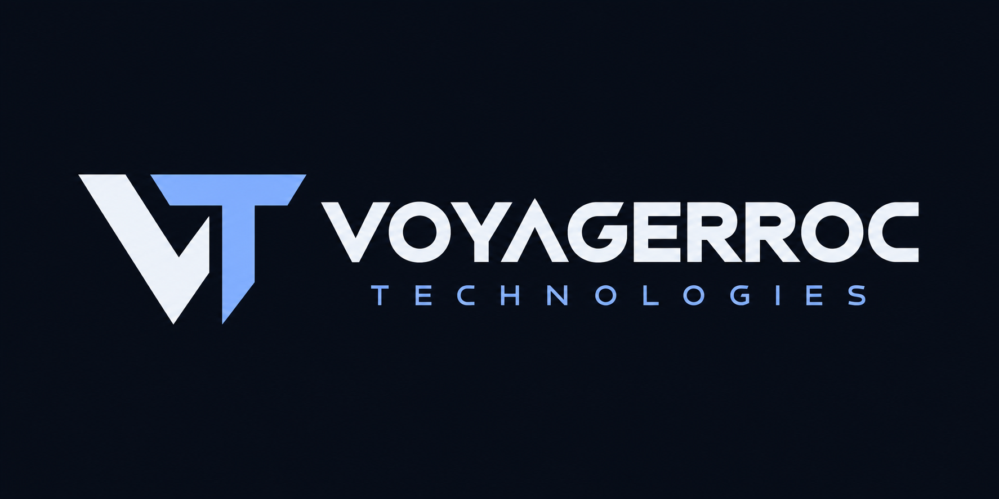
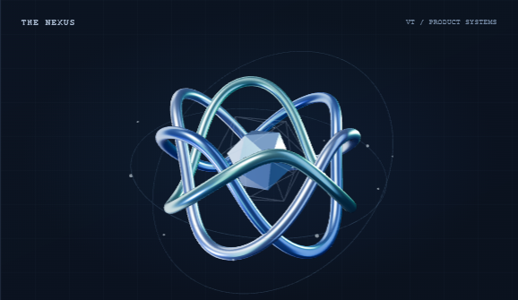

Evidence Intelligence
Yeteneğin arkasındaki kanıtı görünür kıl.
Belgeler, çalışma örnekleri ve değerlendirme aynı bağlamda.

ÜRÜN ODAKLI TEKNOLOJİ
İnsanların işini kolaylaştıran ürünler geliştiriyoruz. Finans, kanıta dayalı işe alım, araştırma ve operasyon yazılımlarında; doğru problemi, doğru sistemle buluşturuyoruz.

BİR EKOSİSTEM. BEŞ GERÇEK İHTİYAÇ.
Her ürün kendi ihtiyacının etrafında şekillenir.
Kaydır. Sistemleri keşfet.
Evidence Intelligence
Belgeler, çalışma örnekleri ve değerlendirme aynı bağlamda.
PayRadar
Düzenli ödemeler ve cihazdaki veri kontrolü.
LaserDeck PTT
İki Android telefon arasında Bluetooth üzerinden bas-konuş, sesli arama, mesaj ve fotoğraf aktarımı.
Pharos Onion Researcher
Kayıtlar, varlık ilişkileri ve zaman içindeki değişimler.
Bungalow OS
Rezervasyon, bakım ve onay süreçleri.
01 / ÜRÜNLER & PLATFORMLAR
Birbirinden farklı ihtiyaçlar. Ortak bir yaklaşım: anlaşılır deneyim, düşünülmüş mimari ve açık ürün sınırları.
02 / MÜHENDİSLİK YAKLAŞIMI
Her ürünün ihtiyacı aynı değil. Kullanıcı deneyimini, veri sınırlarını ve operasyonu birlikte ele alıyoruz.
01 / LOCAL-FIRST
Çevrimdışı kullanım, cihazdaki veri ve isteğe bağlı senkronizasyon. Her katmanın ne yaptığını ayrı anlatıyoruz.
02 / INTELLIGENCE
Arama, kanıt, varlık ilişkileri ve değerlendirme akışları. Yapay zekâyı bir özellik listesinden çok, sistemin ihtiyaç duyduğu yerde kullanıyoruz.
03 / OPERATIONS
Rezervasyondan bakıma, olaylardan onaylara. Dağınık işleri tek bir operasyon mantığı etrafında topluyoruz.
03 / EKOSİSTEM
Uygulamalar, araştırma araçları, açık kaynak ve dijital deneyimler. Ürünler ön planda; diğer çalışmalar kendi bağlamında.
Bu aramada bir çalışma bulunamadı. Başka bir kelime deneyebilirsiniz.
04 / VOYAGERROC TECHNOLOGIES
İşin başında tek bir soru soruyoruz: Bu, kimin hangi işini kolaylaştırıyor?
Voyagerroc Technologies, farklı alanlardaki gerçek ihtiyaçları ürünlere dönüştürme fikrinden doğdu. Bir ödeme uygulamasıyla bir araştırma platformu farklı görünebilir. İkisinde de aradığımız şey aynı: iyi düşünülmüş, kullanılabilir bir çözüm.
Hedefimiz küresel ölçekte değer üreten bir ürün ekosistemi kurmak. Bunu büyük sözlerden önce; geliştirilen ürünler, incelenebilir çalışmalar ve sürekli iyileştirmeyle yapmak istiyoruz.
Yapay zekâ araçları araştırma, kod ve dokümantasyonda üretim ortağımız. Ürünün yönünü belirlemek, kararları anlamak ve çıkan işi kontrol etmek ise sürecin merkezinde.
05 / İLETİŞİM
Ürünlerimiz, iş birliği veya çözmek istediğiniz bir ihtiyaç hakkında konuşalım.
İletişim sırasında verilerin nasıl işlendiği: KVKK aydınlatma metni.
KURUMSAL İLETİŞİMvoyagerroc@voyagerroctechnologies.com ↗DOĞRUDAN İLETİŞİMerol@voyagerroctechnologies.com ↗